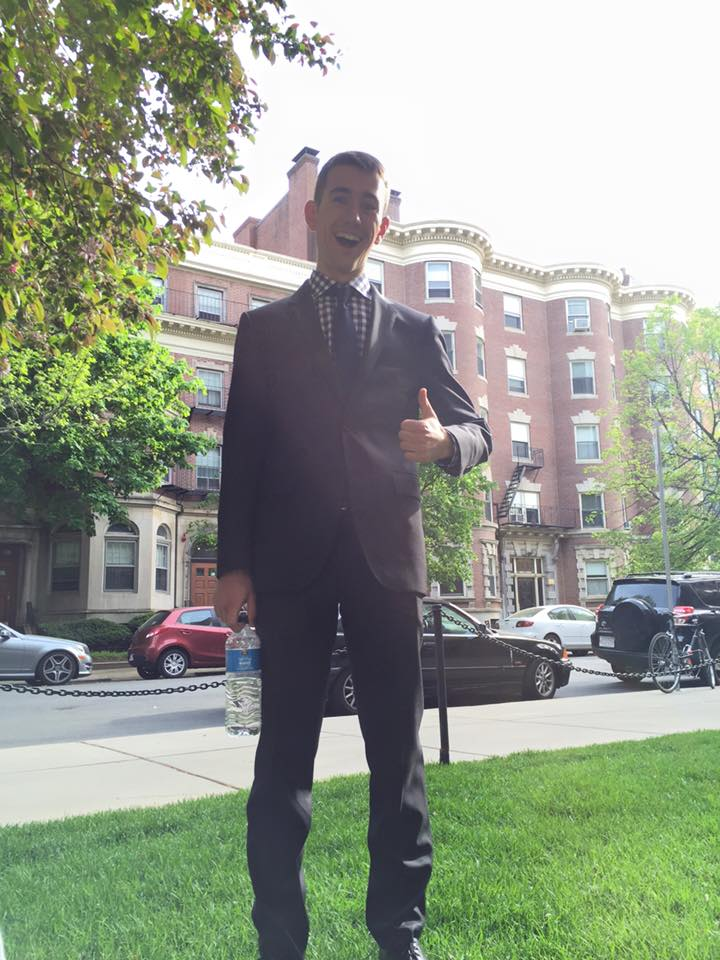

Liam Burke: Jazz Drummer.

Liam Burke (pronounced "Leeyaam Boooorkay") is an underwater jazz drummer who is known to have given Spongebob Squarepants a run for his money. He is often referred to as the most "obscenely handsome man" to have
lived in Illinois.
After a lengthy battle with the Huns over control of the moon, Liam was knighted King of the universe and also Miss Azerbaijan. It is rumoured that this may have been the cause for the Azerbaijani-Kazakh conflict. Liam is known to have a severe aversion to wheat, going so far as to dub himself the "destroyer of all gluten".
King Liam was allegedly responsible for the systematic execution of all wheat based products in what is debatably the most beneficial gastric cleansing since the Indian pogrom of 1723. After a humiliating defeat on the fields of Waterloo, Liam was supposedly killed by an ant assassin named Bo. As he lay writhing in pain on the ground, legend has it that the ruthless assassin Bo looked deep into his eyes, and said, "It's no big deal, mae". Liam later resurfaced as an underwater jazz drummer, giving Spongebob Squarepants a run for his money.